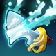

It is said that none survived the battle at the Trembling Isle, save perhaps, the Admiral of the Claddish
fleet. Man or phantom, Kunkka's presence on the battlefield is duly felt by all. Armed with the legendary
Tidebringer, the Admiral strikes with a single blow at all who stand before him. A veteran of innumerable
naval engagements, Kunkka times his skills with Planned Precision, predicting Tidal Waves and catching
opponents in a rising Torrent, disrupting the battlefield with a Storm of Geysers, or summoning the
ephemeral Ghostly Shipwreck to dash them upon the rocks. Should his aim prove true, he and his allies will
have no trouble cleaning up whatever is left.

ROLES :
CARRY
SUPPORT
DISABLER
INITIATOR
DURABLE
NUKER
Bio
Kunkka, The Admiral
"Step lively now, your Admiral is on board!"
As The Admiral of the mighty Claddish Navy, Kunkka was charged with protecting the isles of his homeland
when the demons of the Cataract made a concerted grab at the lands of men. After years of small sorties,
and
increasingly bold and devastating attacks, the demon fleet flung all its carnivorous ships at the
Trembling
Isle. Desperate, the Suicide-Mages of Cladd committed their ultimate rite, summoning a host of ancestral
spirits to protect the fleet. Against the demons, this was just barely enough to turn the tide.
As Kunkka watched the demons take his ships down one by one, he had the satisfaction of wearing away
their
fleet with his ancestral magic. But at the battle's peak, something in the clash of demons, men and
atavistic spirits must have stirred a fourth power that had been slumbering in the depths. The waves
rose up
in towering spouts around the few remaining ships, and Maelrawn the Tentacular appeared amid the fray.
His
tendrils wove among the ships, drawing demon and human craft together, churning the water and wind into
a
raging chaos.
What happened in the crucible of that storm, none may truly say. The Cataract roars off into the void,
deserted by its former denizens. Kunkka is now The Admiral of but one ship, a ghostly rig which
endlessly
replays the final seconds of its destruction. Whether he died in that crash is anyone's guess. Not even
Tidehunter, who summoned Maelrawn, knows for sure.
Abilities
Torrent
Ability
Target Area
Affects
Enemy
Damage
Magical
Summons a rising torrent that, after a short delay, hurls enemy units into
the sky, stunning, dealing damage and slowing movement speed.
Cast Animation: 0.4+0
Cast Range: 1300
Effect Radius: 225 (Talent 305)
Effect Delay: 1.6
Total Damage: 80/160/240/320
Move Speed Slow: 40%
Slow Duration: 1/2/3/4
Stun Duration: 1.6 (Talent 2.08)
Knockup Duration: 1.53 (Talent 1.99)
16/14/12/10100
Aghanim's Scepter Upgrade:NEW ABILITY
Grants the Torrent Storm Ability
An ancestral rush of water explodes from the center of the world, called upon by the Admiral.
With the cast time and effect delay, the total delay is 2 seconds at all levels.
Torrent can be cast without having to face towards the targeted area, as long as the
targeted area is within the cast range.
The affected units are stunned, moved upwards, and can still be attacked.
While in the air, other units may pass below the affected units.
The stun and slow are applied at the same time, so overall, the slow lasts for
2.6/3.6/4.6/5.6 (Talent 3.08/4.08/5.08/6.08) seconds.
The stun lasts slightly longer than the knockup, so hit units are on the ground for the
remaining 0.07 seconds of the stun.
Torrent's stun/knockup debuff is not affected by status resistance. However, the slow debuff
is.
After casting, a visual effect appears at the targeted area and a sound effect plays for the
delay period.
These effects are visible and audible to allies only.
Deals damage in 0.2-second intervals, starting 0.2 seconds after the effect delay, resulting
in 8 (Talent 10.4) damage instances.
Torrent's stun/knockup debuff is not affected by status resistance. However, the
slow debuff is.
Torrent's stun/knockup debuff is not affected by status resistance. However, the
slow debuff is.
Provides 350 radius ground vision over the targeted area upon cast for 3.13 seconds.